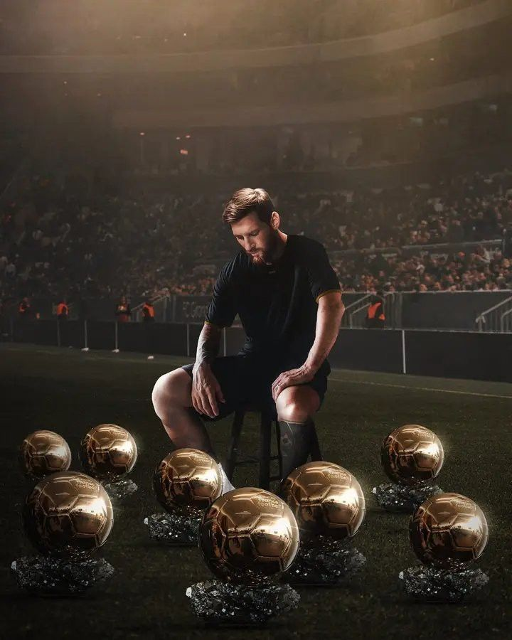

Fakta
Biografi om Lionel Messi
Lionel Messi er en argentinsk fodboldspiller, der til dagligt spiller i Inter Miami. Han begyndte karrieren i sin fars klub, Grandoli, da han var fem år gammel. Som 13-årig blev han optaget på FC Barcelonas fodboldskole La Masia. Klubben gav ham medicin og behandlinger, så han blev højere, og dermed kunne spille fodbold på optimalt niveau.
Den 1. maj 2005 blev han den yngste målscorer for Barcelona nogensinde. Han blev kåret til FIFA World Player of the Year i 2009, og han sammenlignes med legenden Diego Maradona.
Den 10. august blev det officielt, at Lionel Messi har skrevet kontrakt med Paris Saint-Germain. Han har signeret en toårig kontrakt med option på yderligere et år.
Messis statistik for FC Barcelonas førstehold ser således ud
Kampe: 778 | Mål: 672 | Assists: 305 | Titler: 35
Han vandt disse trofæer med FC Barcelona:
- 10 x La Liga
- 4 x Champions League
- 7 x Copa del Rey
- 7 x Copa del Rey
- 8 x Supercopa
- 3 x UEFA Super Cup
- 3 x Klub-VM
Detaljer
Messi rundede 1.000 kampe den 3. december 2022. I disse har han scoret 789 mål og leveret 348 assists. Altså i alt været involveret i 1.137 scoringer i sine 1.000 kampe. Den 7. juni 2023 kunne Messi bekræfte, at han forlod PSG til fordel for David Beckhams MLS-klub, Inter Miami. Han skiftede til MLS-klubben på en fri transfer.

Den 11. januar 2016 modtog han sin femte Ballon d’Or. Den 2. december 2019 modtog han sin 6. Ballon d’Or, hvilket gør ham til den spiller, som har vundet det prestigefyldte trofæ flest gange. I år 2023 vandt han den ottende trofæ. Den 5. august 2021 blev det officielt, at Messi forlod FC Barcelona. Parterne var ellers enige om en ny kontrakt, men grundet økonomiske problemer i klubben, så var det ikke muligt at forlænge.